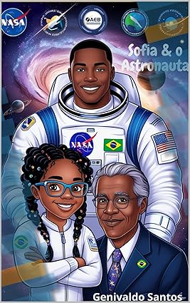

|
 |
Sofia e o AstronautaSofia e o Astronauta: é uma obra que combina ciência, aventura e inspiração, conduzindo o leitor em uma fascinante viagem pelas constelações do Zodíaco e pela Via Lactea. Através dos olhos de Sofia, Alex e Osvaldo, o livro apresenta conceitos astronômicos complexos de forma envolvente, com uma narrativa rica em detalhes e desafios científicos. A obra busca inspirar leitores a explorar as maravilhas do cosmos, combinando ciência e narrativa literária. É uma celebração do conhecimento humano e um convite à curiosidade científica, com um forte apelo educacional e filosófico, ideal para todas as idades. Com um enredo cativante, “Sofia & o Astronauta” é uma jornada épica que desperta reflexões sobre a nossa posição no universo e o infinito potencial do aprendizado. |
| ★★★★★ Faixa etária: 12+ R$ 39,90 | |